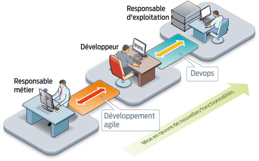

INSSET - Master 2 Cloud Computing
Novembre 2016 - Bertrand Tornil
DevOps
Les grands du Web... et d'autres
Amazon
Flickr
Etsy
Github
37 Signals
...
On a un problème
Je dois ajouter / améliorer des fonctionnalités.
Changements
Je dois faire en sorte que le service soit stable.
Stabilité
"Merci de mettre ce code en prod. Bon WeekEnd !"
"Heu... ?"
"J'ai un fix qui marche sur mon laptop"
"ok, on met ton portable en prod, alors"
Pas de dogme
Pas manifeste
Des valeurs
À bas les silos !
Parler est gratuit
Versionning du code
KISS principle
Intégration continue
Release continue
By automating deploys, a brand-new GitHubber can (...) deploy changes on their first day without needing to read up on how our deploy script delivers code updates to 60+ servers.
Zach Holman - GitHub
IMVU :50 déploiements par jour, 9 minutes par build sur 40 serveurs de builds
Flickr :10 déploiements par jour
Etsy :25 / jours, 7000 tests sur 10 jenkins en parallèle
Wordpress.com : 16 par jour, 30 secondes pour déployer sur 400 serveurs
Facebook : 1 à 2 push par jour, 1 large par semaine. Le binaire à déployer pèse + 1Go à déployer sur 30000 machines... en moins d'une heure
Chez Etsy et Github, les nouveaux DOIVENT pousser en prod dès leur premier jour
Les machines sont vraiment douées pour faire la même tâche
encore et encore
Pensez à ça :
5 minutes par jour
=
2.6 jours par an !
Builds
Déploiements
Tests
Monitoring
Gestion de configuration
...
Measure Anything, Measure Everything
Ian Malpass - Etsy
Publication de code : Statd, Logster, Deployinator
Vision commune
Problèmes communs
Glossaire commun
Outils communs
Devopsdays
Devops meetups
Devops mailing list
https://groups.google.com/forum/#!forum/paris-devops